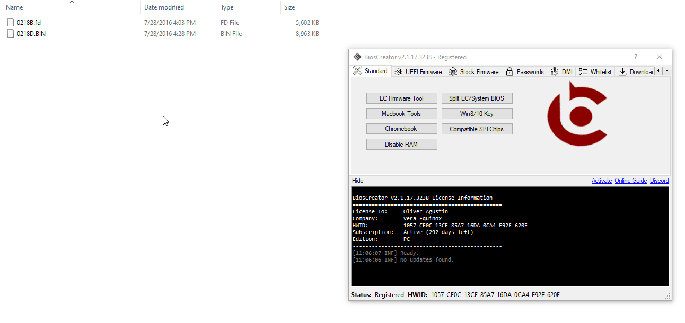

<style>
    .center {
        display: block;
        margin-left: auto;
        margin-right: auto;
        width: 50%;
      }

    a {
      text-decoration: none;
      display: inline-block;
      padding: 8px 16px;
    }
    
    a:hover {
      background-color: #ddd;
      color: black;
    }
    
    .previous {
      background-color: #f1f1f1;
      color: black;
    }
    
    .next {
      background-color: #160042;
      color: white;
    }
    </style>

<section class="support section bg-gray">
	<div class="container">
    <div class="container" style="text-align:justify; margin-bottom:50px;">
      <h4 class="join">How to split extracted firmware into System BIOS and EC Firmware?</h4>
      <p>Sometimes EC and System BIOS are combined together. When you extract firmware for InsydeFlash firmware, this is automatically done for you. 
        However, extra steps is necessary for other brands like HP. The process is explained in the succeeding sections.</p>
      <p>For this task to be successfuly, the following criteria must be satisfied.</p>

      <p><b>Requirements</b></p>
      <div>
      <input type="checkbox" disabled checked />
      <label>Firmware size is invalid (<a href="{{ site.baseurl }}/getting-started/valid-firmware">see this note</a>)</label>
      </div>
      <div>
      <input type="checkbox" disabled checked />
      <label>Firmware size is higher than valid size and/or</label>
      </div>
      <div>
      <input type="checkbox" disabled checked />
      <label>Firmware is InsydeFlash file</label>
      </div>
<br>
      <p><b>Example:</b></p>
      <p>HP</p>
      <p>EXTRACTION</p>
      <p>After you extract the bin/FD, just drag the bin/FD file to the BiosExtractor. The software will notify you if the file requires further processing.</p>
      
<br>
      <p>DECRYPTION</p>
      
<br>
      <p>SPLITTING OF EC/SYSTEM BIOS</p>
      
      <br>

    <a href="{{ site.baseurl }}/faq/decrypt-hp" class="previous">&laquo; Previous</a>
    <a href="{{ site.baseurl }}/faq/reset-bios" class="next">Next &raquo;</a>

		</div> <!-- End row -->
	</div> <!-- End container -->
</section> <!-- End section -->